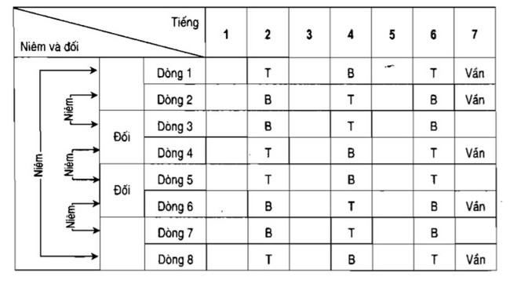

Cách làm thơ thất ngôn bát cú – Tổng hợp 50 bài thơ thất ngôn bát cú hay
Thơ thất ngôn bát cú là gì?
Thất ngôn bát cú là thể loại thơ có 8 câu, mỗi câu 7 chữ, gieo vần ở chữ cuối trong các câu 1, 2, 4, 6, 8. Đây là một trong những thể thơ cơ bản của thơ Đường Luật và rất được các nhà thơ Việt Nam như Nguyễn Khuyến, Trần Tế Xương, Bà Huyện Thanh Quan,… ưa thích.
-

Bố cục một bài thơ thất ngôn bát cú
Một bài thơ thất ngôn bát cú có 4 cặp câu tạo thành 4 phần: đề – thực – luận – kết:
Tổng hợp 50 bài thơ thất ngôn bát cú hay
Thơ thất ngôn bát cú về hoàng hôn 1: CHIỀU MƠ
Hoàng hôn tắt nắng phủ sương mờ Dõi mắt trông về dạ ngẩn ngơ Rặng liễu bên hồ đang ủ rũ Lục bình dưới nước bỗng chơ vơ Muôn điều hạnh ngộ như dòng chảy Một khúc rời xa tận bến bờ Chữ mộng chung vai sầu quạnh quẽ Hương lòng vẫn đọng tại chiều mơ.
Thơ thất ngôn bát cú về mưa 2: MƯA CHIỀU KỶ NIỆM
Thương người giã biệt một chiều mưa Lệ đẫm khăn thêu lúc cuối mùa Kỷ niệm mong hoài còn thổn thức Duyên tình nhớ mãi vẫn đong đưa Sương mờ lạnh lẽo chờ mây gọi Khói nhạt hanh hao đợi gió lùa Nỗi cảm cô đơn buồn lặng lẽ Mơ hồ tưởng lại chuyện ngày xưa…
Thơ thất ngôn bát cú về hoa 3: HOA MẮC CƠ
Hoa nở bên lề hứng giọt sương Tên em Mắc Cỡ mọc trên đường Nhẹ nhàng cánh mỏng ong không thích Dịu ngọt đài mềm bướm chẳng thương Tháng lạnh mưa rơi lòng trộm nhớ Đêm dài gió thổi dạ hoài vương Đem thân hiến trọn cho đời sống Chữa bệnh yên lành khắp mọi phương…
Thơ thất ngôn bát cú về mùa thu 4: THU XƯA
Lá úa trên cây nhuộm sắc màu Đôi ta rẽ hướng biết tìm đâu Đìu hiu lối cũ câu duyên nợ Khắc khoải đường xưa chữ mộng sầu Tiếng hẹn ghi lòng sao vẫn tủi Lời yêu tạc dạ mãi còn đau Gom từng kỷ niệm vào hư ảo Lặng ngắm thu về giọt lệ ngâu…
Thơ thất ngôn bát cú về hoa 5: LỤC BÌNH TRÔI
Thân em tắm gội giữa dòng sông Một thuở lênh đênh đượm ngát nồng Hoa tím bồng bềnh mùa nước nổi Bèo xanh nghiêng ngã dưới cơn giông Nghĩ thương buổi sớm còn chờ đón Tủi kiếp ban chiều hết ngóng trông Nắng táp mưa sa đời phận bạc Lục Bình trôi mãi vẫn long đong
Thơ thất ngôn bát cú tình yêu 6: BẾN MƠ
Đi vào cõi mộng giữa vầng không Cuộc sống bên ta thuở mặn nồng Lối cũ thương hoài sầu quyến luyến Đường xưa nhớ mãi tủi chờ mong Đôi vần trổi dạ tình chưa thấu Nét bút ngân hồn ái chẳng thông Tóc bạc dần phai mờ bụi phủ Sao đành bội bạc buổi tàn đông

7: TRĂNG BUỒN
Ngắm ánh trăng trôi dạ rối bời Vi vu gió thổi giữa lưng trời Nâng ly rượu đắng tình ta cạn Cụng chén men cay mộng rã rời Sóng nước mong chờ còn nhạt nhẽo Mây trời ngóng đợi lại sầu lơi Thuyền xa vạn nẻo tình ly biệt Lối cũ đâu rồi lệ chẳng vơi
8: NHỚ MẸ
Tìm dáng năm xưa bóng mẹ hiền Vòng tay êm ái buổi truân chuyên Âm thầm gạt lệ buồn muôn thuở Khắc khoải dòng châu khóc vạn niên Lặng lẽ gần con trong giấc điệp Bồi hồi cạnh trẻ giữa cung tiên Trần gian con chẳng tìm đâu thấy Thương nhớ bên mồ mẹ ngủ yên
9: DUYÊN PHẬN
Một nét đoan trang phận má hồng Thuyền quyên lặng lẽ chốn cô phòng Đìu hiu dạ đắm buồn trào sóng Quạnh quẽ lòng vương tủi ngập lòng Thuở ấy bên nhau ngàn ước vọng Mùa đây cách biệt vạn niềm mong Mơ màng tỉnh giấc hồn lay động Số mệnh an bài kiếp đục trong
10: MƯA VÀ NỖI NHỚ
Ngồi ôn kỷ niệm một chiều mưa Thấm thoát trôi qua đã mấy mùa Vụn vỡ ân tình còn lạc mất Đành cam chỉ thắm lại xa đưa Cầu mong kẻ đợi tìm thuyền mộng Nguyện ước người trông thấy bến xưa Quạnh quẽ cô phòng buồn lặng lẽ Bên song ngồi ngắm ánh trăng thưa…
11: PHÔI PHAI
Về thăm chốn cũ đã xa vời Mộng ước duyên xưa cách rã rời Nhỏ giọt châu rơi buồn nhợt nhạt Sa dòng lệ đổ tủi đôi nơi Ân tình tỏ dạ còn không gặp Níu giữ thay lời lại vọng khơi Khẽ nhặt tàn phai tìm lối rẽ Trong lòng nức nở chẳng nào ngơi…
12: KHÚC SẦU
Bỏ lỡ tình xa nặng gánh nhiều Ân dày nghĩa cả vẹn lời yêu Ngày xưa khỏa bút thương dòng mực Chốn cũ tràn nghiên nợ cảnh chiều Gửi lại trên đồi mây sẵn kết Trao về giữa ngõ nắng như thiêu Cung sầu khúc chạnh buồn dang dở Bỏ lỡ tình xa nặng gánh nhiều
13: KHỔ THÂN (Hoàng Huy 05/2012)
Thơ Đường muốn họa khó gì đâu Lắm lúc tìm câu muốn bể đầu Bát cú niêm vần thông đối nghĩa Lời thơ bảy chữ ý thâm sâu Sao đời lắm chuyện trần ai thế Để cỏi lòng thanh thản bớt sầu Xướng họa làm chi mà mỏi mệt Thà tôi hiểu ít… luật không cầu.
14: BUỒN VIỄN XỨ (Hoàng Huy 06/2012)
Trăng rằm toả ánh.. sáng trời mơ Nhật thực mờ che.. tối bến bờ Sáo thổi lòng êm.. từng nốt bổng Cung đàn dạ ấm.. đệm vần tơ Buồn thương chốn cũ..non xanh biếc Lệ nhớ quê xưa.. biển đục lờ Xót dạ rồi chăng.. lời khó tả Buồn lòng chỉ biết… hoạ trong thơ.
15: NÉT THU (Hoàng Huy 07/2012)
Thu tàn trụi lá… nảy mầm sanh Độ tiết xuân sang… lại ngập cành Bướm lượn tung tăng… mưa nhỏ giọt Chim bay lả lướt… nắng hơi hanh Trông trời thổn thức… chàng thi sĩ Ngắm đất bồn chồn… nữ học sinh Vạn kiếp phù dung… thu lá rụng Chờ xuân đổi sắc… mộng an lành.
16: VỊNH CON CẨU(Hoàng Huy 05/2012)
Tạo hoá trời sanh cẩu thật hay Nhà canh sáng tối trọn nguyên ngày Chân dài, mũi thính dù xa dặm Mõm rộng, tai nghe dẫu ngủ say Chẳng biết cơm thừa mau xực tiếp Không màng bã cặn lẹ ăn ngay Trung thành bảo vệ người gia chủ Quấn quýt bên người… giỡn, liếm tay.
17: VỊNH CON CẨU(Hoàng Huy 05/2012)
Tình duyên khổ ải.. chắc ta thà Lẻ bóng mình ên.. những tháng qua Chẳng vợ chơi đùa.. cho sướng đã Không con quậy khóc.. cực hay là Tu thiền cửa Phật.. lòng mong toả Dưỡng tánh nơi chùa.. dạ hiểu ra Nợ kiếp hay không.. thì lẹ trả Cầu duyên chẳng bạc… khổ thân mà.
TỰ NHỦ (Hoàng Huy 05/2012)
Ba lăm chẳng phải thật là già Độ tuổi như vầy rỏ nét pha Tướng mạo dê xòm hay ghẹo gái Thân mình lợn nọc khoái cua bà Đêm dài bóp trán nằm suy nghĩ Ngày ngắn rờ đầu đứng nhớ ba Thuở nhỏ ông thường hay giảng dạy Làm trai ngẩng mặt… gánh sơn hà.
19: THÔI ĐỪNG (Hoàng Huy 05/2012)
Đừng nhớ làm chi.. chuyện mặn nồng Thôi thì dứt khoát.. buổi chiều đông Đừng kề má thắm.. chiều vương nắng Thôi sát môi hồng.. tối nhẹ giông Đừng oán ghen tuông.. đời mộng ảo Thôi hờn trách móc.. cõi hư không Đừng thương tiếc nuối.. làm chi nữa Thôi ráng quên đi… níu tuổi hồng.
20: KHÓ LƯỜNG (Hoàng Huy 05/2012)
Ngẫm nghĩ đêm hôm.. lúc trở về Buồn thằng bạn cũ.. tánh hay mê Ra đường gặp gái.. xài phung phí Đến chỗ người quen.. giở lắm hề Lúc bảnh đồ ngon.. thì mới chịu Giờ nghèo món dở.. cũng không chê Vầy mà thái độ.. luôn kiêu ngạo Để mất tình thân… giữa bạn bè.

21: HÁO SẮC (Hoàng Huy 05/2012)
Thằng nào gặp gái.. nói không ham Đến chỗ đèn mờ..lộ cái tham Vạn sự là do.. lòng háo sắc Muôn điều cũng tại.. tánh tà dâm Nhìn người gặp dáng.. không xem tánh Vẽ cọp tô da.. chẳng vẽ tâm Vợ bỏ theo trai.. vì quá giận Buồn đời mấy thuở… hết si, sân
22: GANH TỊ (Hoàng Huy 05/2012)
Đời này lắm kẻ..thích văn chương Thấy giỏi ganh hờn.. chẳng biết thương Viết lách suy tư..người nghệ sĩ Xem thơ đố kỵ.. kẻ vô lương Nhiều đêm ngẫu hứng.. bao vần đẹp Lắm bửa ngây ngô.. mấy chữ nhường Chẳng hiểu vì sao.. mà viết mãi Thì thôi mặc kệ…cứ coi thường.
23: NỊNH HÓT (Hoàng Huy 05/2012)
Khi yêu trái ấu.. cũng thành tròn Ghét giận ghen hờn.. thật quá non Chẳng ngại khi yêu.. dù cách trở Rồi thì lúc giận.. cứ bon bon Tình đời lắm xảo.. hay gian dối Cuộc sống nhiều mưu.. hoặc trẻ con Rủng rỉnh khoe khoang.. đồ mắc dịch Không tiền nịnh hót… chạy lon ton.
24: ANH TRAI ĐI CHỢ (Hoàng Huy 07/2012)
Buổi sáng hôm nào.. ghé chợ chơi Anh trai trể hẹn..đứng ngoài trời Nhìn tên bảng hiệu.. ngồi chồm hổm Ngó cái băng rôn.. gập gối thôi Khẽ liếc kề bên.. nàng áo khoác Im trông sát cận.. chị quần rời Cô nào cũng đẹp.. cùng duyên dáng Khó quá anh ơi… phải chọn rồi.
25: THƠ CON CÓC (Hoàng Huy 09/2012)
Đã trót mê thơ chẳng muốn rời Trong đầu lảng vảng đọc không ngơi Đêm nằm ngẫm nghĩ tìm thơ mới Sáng đứng suy tư viết để đời Kiếm vội vài câu vần lả lướt Quơ liền mấy chữ kẻ đùa chơi Thơ mình cóc nhái bài thơ dỏm Bạn thích xem thơ… có dịp, mời.
26: HOÀI NIỆM (Ngọc Liên)
Nước mát trong veo dợn bóng hình Tìm đâu một thuở dáng em xinh Bên nhau thệ ước tròn đôi lứa Cách trở yêu thương vẹn chút tình Những lúc âu sầu lòng phấn chấn Nhiều khi vội vã dạ khang ninh Lời trao nhạt nhẽo hoài mơ vọng Kỷ niệm giăng đầy vẫn lặng thinh
27: CHIỀU MƠ
Hoàng hôn tắt nắng phủ sương mờ Dõi mắt trông về dạ ngẩn ngơ Rặng liễu bên hồ đang ủ rũ Lục bình dưới nước bỗng chơ vơ Muôn điều hạnh ngộ như dòng chảy Một khúc rời xa tận bến bờ Chữ mộng chung vai sầu quạnh quẽ Hương lòng vẫn đọng tại chiều mơ.
28: KHÚC TƠ LÒNG
Thương người giã biệt một chiều mưa Lệ đẫm khăn thêu lúc cuối mùa Kỷ niệm mong hoài còn thổn thức Duyên tình nhớ mãi vẫn đong đưa Sương mờ lạnh lẽo chờ mây gọi Khói nhạt hanh hao đợi gió lùa Nỗi cảm cô đơn buồn lặng lẽ Mơ hồ tưởng lại chuyện ngày xưa…
29: LẬN ĐẬN
Ngấn lệ bao ngày đã nhớ trông Hồng phai vận kiếp mãi đục trong Đêm dài vất vả tường thương cảm Ngày ngắn gian truân hiểu xót lòng Cạn chén men nồng mong gặp được Thêm nhiều vị đắng thỏa chờ mong Từng cơn gió thổi tràn nhung nhớ Có biết chăng đây với nỗi lòng…

30: VẮNG LẶNG
Lối vắng canh tàn đã lạnh tanh Bao năm thoảng gió cuốn qua mành Vườn xưa nguyện ước dù không vẹn Nẻo cũ chờ mong dẫu chẳng thành Trách cứ người đi hao tuổi trẻ Phiền hà kẻ đợi phí xuân xanh Thời gian bỏ mặc tình hờ hững Hạnh phúc đâu còn dưới mái tranh
31: CHUYẾN ĐÒ LỠ
Chân tình nghĩa nặng mộng tào khang Nỡ để duyên xưa lắm phũ phàng Nén giọt thương tràn sầu bến ngã Đan niềm ước vọng ngóng đò ngang Gom từng hạnh phúc còn dang dở Nhặt những chua cay đã muộn màng Tháng lại ngày qua như gió thoảng Bao năm chịu lỡ chuyến trăng vàng…
32: TÌNH XA
Dẫu biết yêu thương chẳng được rồi Không cần nghĩ chuyện hẹn thề trôi Bờ xưa nước chảy còn lay động Nẻo vắng chuông ngân vẫn đổ hồi Nhạt nhẽo từng đêm giờ tiễn biệt Âu sầu vạn thuở phút chia phôi Duyên tình dệt nghĩa thành hư ảo Một khúc tương tư mãi đứng ngồi
33: KHÚC SẦU
Dẫu biết yêu thương chẳng được rồi Không cần nghĩ chuyện hẹn thề trôi Bờ xưa nước chảy còn lay động Nẻo vắng chuông ngân vẫn đổ hồi Nhạt nhẽo từng đêm giờ tiễn biệt Âu sầu vạn thuở phút chia phôi Duyên tình dệt nghĩa thành hư ảo Một khúc tương tư mãi đứng ngồi
34: MỘT VÒNG NHỚ QUÊN
Cát bụi rồi đây cũng chốn nầy Buồn buồn tự hỏi có gì say Nhân duyên chỉ thắm lờn tơ nguyệt Một kiếp trần ai mộng quá đầy Quyến luyến làm chi tình chẳng tỏ Mai này cũng hết có gì xây Cô đơn quạnh vắng từ xa ấy Bóng tối vây quanh đến bủa vây.
35: TÌNH SẦU
Thuở ấy đôi ta cách biệt nhau Đường mơ khắc khoải mối duyên đầu Người chờ lạc lõng tình chưa thấu Kẻ đợi bơ vơ ái đã nhàu Gợi nhớ vòng tay muôn tiếng ước Không quên kỷ niệm một lời cầu Hương nồng nghĩa đượm giờ phai lạt Tựa cửa bên song lệ thắm sầu
36: HƯƠNG XƯA
Mây trôi gọi gió thổi về ngàn Chợt tỉnh say nồng chịu vỡ tan Ngấn lệ tuôn rơi vào cõi vắng Tơ lòng lắng đọng giữa thời gian Chiều buông tựa thuở hằng lưu luyến Bóng đổ đôi bờ mãi chứa chan Nhớ lại khi xưa tình dệt thắm Nay đành phải lỡ phận hồng nhan
37: MÙA ĐÔNG NƠI ẤY
Tựa cửa bên song gió lạnh tràn Đông về tắt nắng giọt mưa chan Chân đồi quạnh quẽ xa muôn nẻo Đỉnh núi chênh vênh cách vạn ngàn Mộng cố quên rồi khi nghĩa rã Duyên đừng níu nữa lúc tình tan Mờ tin cánh nhạn sầu cô lẻ Héo hắt tim côi bóng đã tàn…
38: CHIỀU NHỚ
Hoàng hôn tím nhuộm cả mây trời Lặng ngắm tà dương gió lả lơi Giấc mộng vô tình buồn một cõi Lời yêu mặn đắng giữ bên đời Còn đâu dáng nhỏ tràn mi đọng Vẫn thấy thân gầy đổ lệ rơi Hạnh phúc dâng trào nay vụn vỡ Đêm nằm thổn thức nỗi sầu khơi
39: CHỈ MỘT MÌNH THÔI
Bóng ngã chiều buông vẫn chỗ ngồi Chờ ai khoắc khoải một mình tôi Rồi đây có thể thành bia đá Để thấy người thương giữa núi đồi Viễn cảnh mà thôi buồn lắm ấy Bao thu nhánh lá khẽ khàng rơi Miền thương giữ mãi lòng se lạnh Chỉ một mình thôi dạ rối bời.

40: ĐONG
Biết người đâu nhớ vẫn hoài mong Bởi những niềm yêu ngập đáy lòng Từng buổi biển chiều nghe sóng vỗ Thêm từng đêm nguyệt thấy trời giông Một thuở bên nhau rồi đôi ngã Muôn kiếp từ ly mãi hiệp lòng. Nên biết làm sao tình quá lớn Bao giờ vơi được nỗi sầu đong.
41: THU ĐIẾU
Ao thu lạnh lẽo nước trong veo, Một chiếc thuyền câu bé tẻo teo. Sóng biếc theo làn hơi gợn tí, Lá vàng trước gió sẽ đưa vèo. Tầng mây lơ lửng trời xanh ngắt, Ngõ trúc quanh co khách vắng teo. Tựa gối, ôm cần lâu chẳng được, Cá đâu đớp động dưới chân bèo.
42: CẢM XUÂN
Pháo đốt vui xuân rộn phố phường Xuân về riêng cảm khách văn chương Hồng phơi loá mắt chùm hoa giấy Trắng nhuộm phơ đầu mái tóc sương Cành liễu đông tây cơn gió thổi Con tằm sống thác sợi tơ vương Xuân này biết có hơn xuân trước Hay nữa xuân tàn hạ lại sang?
43: THU ẨM
Năm gian nhà cỏ thấp le te Ngõ tối đêm sâu đóm lập lòe Lưng giậu phất phơ màu khói nhạt Làn ao lóng lánh bóng trăng loe Da trời ai nhuộm mà xanh ngắt ? Mắt lão không vầy cũng đỏ hoe Rượu tiếng rằng hay, hay chả mấy Độ năm ba chén đã say nhè.
44: THU VỊNH
Trời thu xanh ngắt mấy tầng cao, Cần trúc lơ phơ gió hắt hiu. Nước biếc trông như tầng khói phủ Song thưa để mặc ánh trăng vào. Mấy chùm trước giậu hoa năm ngoái, Một tiếng trên không ngỗng nước nào ? Nhân hứng cũng vừa toan cất bút, Nghĩ ra lại thẹn với ông Đào.
45: QUA ĐÈO NGANG
Bước tới đèo Ngang bóng xế tà Cỏ cây chen lá, đá chen hoa Lom khom dưới núi, tiều vài chú Lác đác bên sông, chợ mấy nhà Nhớ nước đau lòng con quốc quốc Thương nhà mỏi miệng cái gia gia Dừng chân đứng lại, trời non nước Một mảnh tình riêng, ta với ta.
46: THƯƠNG VỢ
Quanh năm buôn bán ở mom sông, Nuôi đủ năm con với một chồng. Lặn lội thân cò khi quãng vắng, Eo sèo mặt nước buổi đò đông. Một duyên, hai nợ, âu đành phận, Năm nắng, mười mưa, dám quản công. Cha mẹ thói đời ăn ở bạc: Có chồng hờ hững cũng như không!
47: NHỚ BẠN PHƯƠNG TRỜI
Ta nhớ người xa cách núi sông Người xa, xa lắm, nhớ ta không? Sao đang vui vẻ ra buồn bã! Vừa mới quen nhau đã lạ lùng! Lúc nhớ nhớ cùng trong mộng tưởng Khi riêng riêng cả đến tình chung Tương tư lọ phải là mưa gió Một ngọn đèn xanh trống điểm thùng.
48: CẢM XUÂN
Pháo đốt vui xuân rộn phố phường Xuân về riêng cảm khách văn chương Hồng phơi loá mắt chùm hoa giấy Trắng nhuộm phơ đầu mái tóc sương Cành liễu đông tây cơn gió thổi Con tằm sống thác sợi tơ vương Xuân này biết có hơn xuân trước Hay nữa xuân tàn hạ lại sang?
49: BẠN ĐẾN CHƠI NHÀ
Đã bấy lâu nay bác tới nhà. Trẻ thời đi vắng, chợ thời xa. Ao sâu nước cả, khôn chài cá, Vườn rộng rào thưa, khó đuổi gà. Cải chửa ra cây, cà mới nụ, Bầu vừa rụng rốn, mướp đương hoa. Đầu trò tiếp khách, trầu không có, Bác đến chơi đây ta với ta.
50: ĐÂY MÙA XUÂN TỚI
Đã hết ngày đông, nắng đẹp trời Trong vườn bướm lượn với hoa tươi Trên giàn thiên lý oanh đùa cợt Dưới gốc mai già sáo ỷ ơi ! Thánh thiện đàn ngâm hòa điệu hát Hồn nhiên gió thổi vọng môi cười Tình xuân ấm áp như hơi thở Nếu phải xa lòng nhớ chẳng vơi !